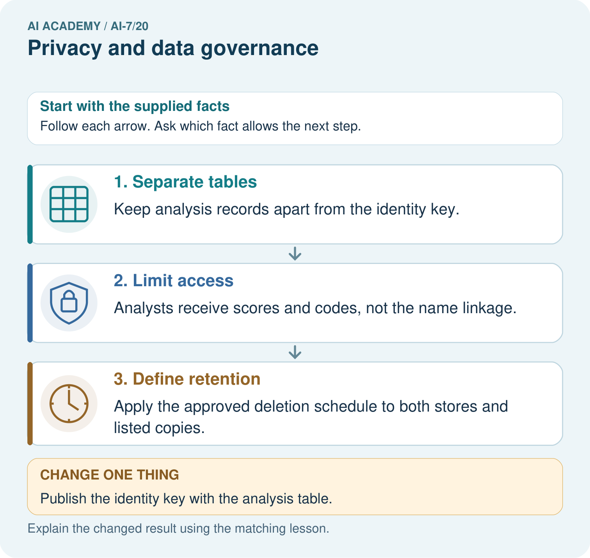
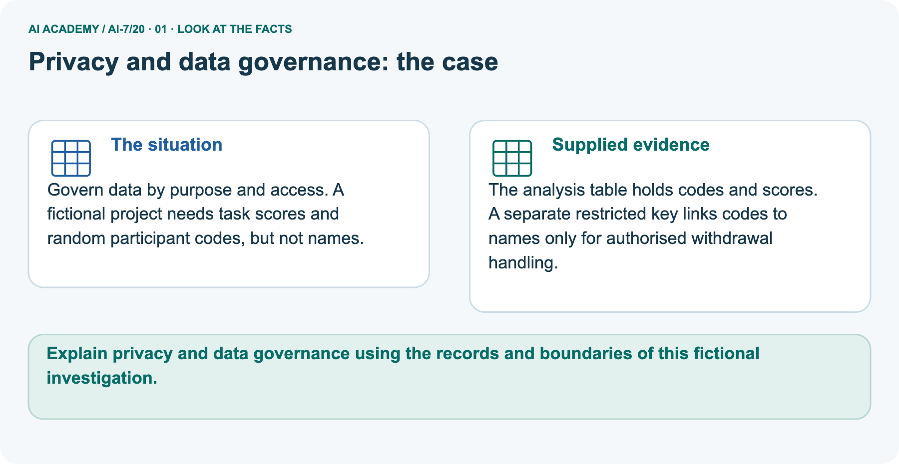
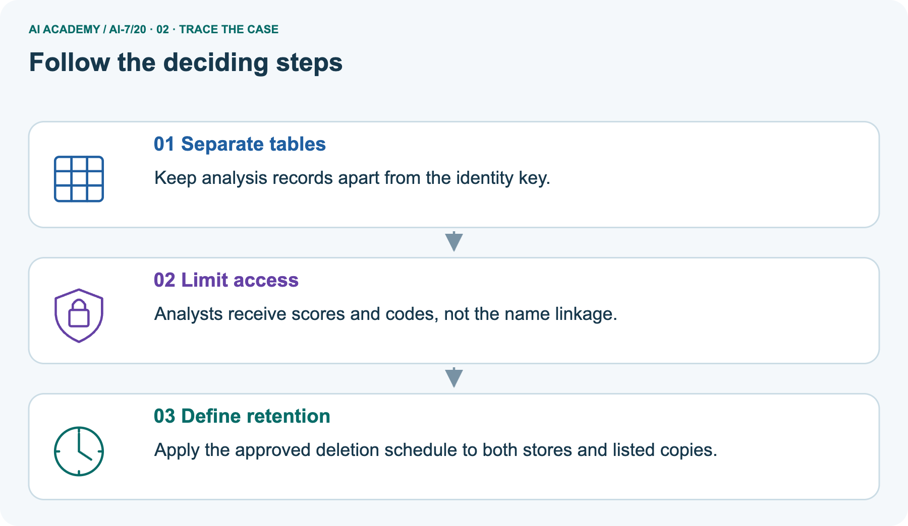
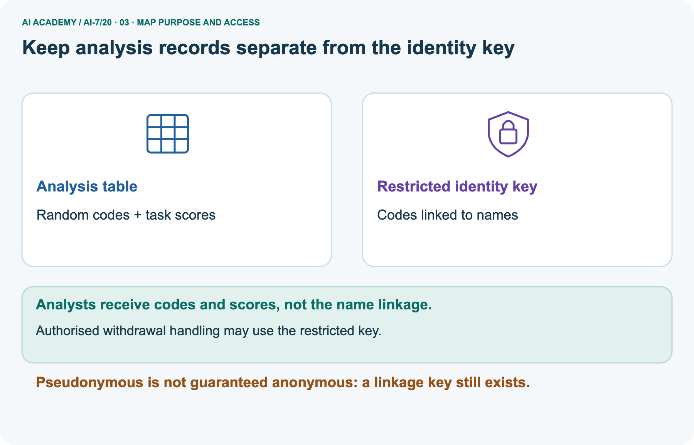
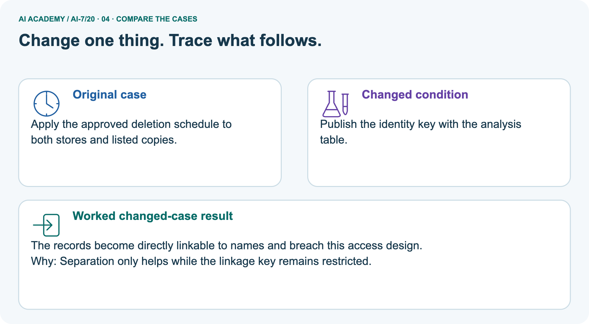
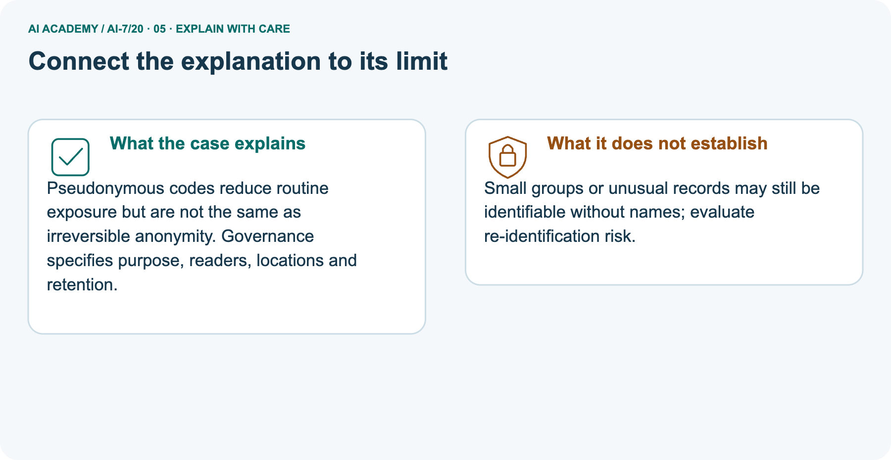
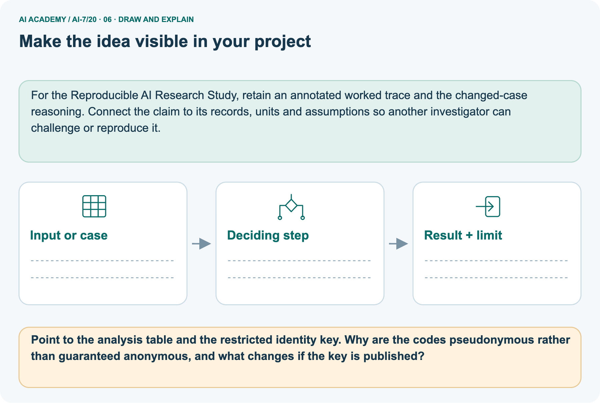

AI Academy · Level 7 · Grade 12 · Week 20 · Workbook
Privacy and data governance
Learn to understand, design, build, test and explain AI systems responsibly.
Project: Reproducible AI Research Study
THE CONNECTED WEEK
One complete fictional data-flow and governance record.
Keep fields, purpose, roles, linking routes, retention and unresolved risks together.
Keep one habit: Recall → W1–W3/W5 → independent subgroup case → research project → delayed return.
Main lesson · Section 1
Recall · Retrieve before notes
Keep this task’s inputs,rule and response together.
Complete task and evidence
Try the recall before opening notes. Then use a different colour or a labelled second line to correct your explanation.
Without opening the old lesson, explain one key idea from Research ethics and consent. Give an example and a mistake that the idea helps you avoid.
Without opening the old lesson, explain one key idea from Sensitivity analysis. Give an example and a mistake that the idea helps you avoid.
Without opening the old lesson, explain one key idea from Statistical tests and assumptions. Give an example and a mistake that the idea helps you avoid.
Research ethics and consent
Sensitivity analysis
Statistical tests and assumptions
Main lesson · Section 5
W1 · Explain the current example
Keep this task’s inputs,rule and response together.
Complete task and evidence
Data governance states purpose, necessary fields, readers, locations and retention. This exercise uses fictional metadata, not personal records. Main export has coded ID, exact birth date, classroom and rare condition. Their combination may identify someone even without a name. For the explicit toy task-score purpose, unnecessary details are removed in a proposed plan.
Separate picture analysis has participant code and score; a restricted key maps codes to identities for authorized withdrawal handling. The shared code makes records pseudonymous and linkable if the key is available. Publishing both breaks that separation. Restricted access must actually be implemented; a diagram or metadata flag does not prove it.
Rare combinations and small groups can remain identifying through other information. A proposed retention action is not executed deletion. Under the supplied minimum-five rule, groups below five are blocked; a count of five meets only that rule, not a privacy guarantee. Any suppression or aggregation also needs checks for indirect disclosure and permitted purpose.
No export, identity lookup, real approval or deletion is performed.
Explain the weekly mechanism in your own words. Use the worked scenario to name its input, decision rule and output.
Main lesson · Section 6
W2 · Trace the worked case
Keep the supplied inputs, comparison rule and evidence together.
Complete task and evidence
Data governance states purpose, necessary fields, readers, locations and retention. This exercise uses fictional metadata, not personal records. Main export has coded ID, exact birth date, classroom and rare condition. Their combination may identify someone even without a name. For the explicit toy task-score purpose, unnecessary details are removed in a proposed plan.
Separate picture analysis has participant code and score; a restricted key maps codes to identities for authorized withdrawal handling. The shared code makes records pseudonymous and linkable if the key is available. Publishing both breaks that separation. Restricted access must actually be implemented; a diagram or metadata flag does not prove it.
Rare combinations and small groups can remain identifying through other information. A proposed retention action is not executed deletion. Under the supplied minimum-five rule, groups below five are blocked; a count of five meets only that rule, not a privacy guarantee. Any suppression or aggregation also needs checks for indirect disclosure and permitted purpose.
No export, identity lookup, real approval or deletion is performed.
Export has coded ID, exact birth date, classroom and rare condition. Team calls it anonymous because names are removed. Show the intermediate steps and give the conclusion with its scope.
| Main export field | Reason for concern | Toy-purpose action |
|---|---|---|
| Coded ID | May link to other records or a key | Restrict under the declared role plan |
| Exact birth date | Detailed identifying combination | Remove from the task-score analysis proposal |
| Classroom | Narrows the possible people | Remove unnecessary detail |
| Rare condition | Can identify through unusual combinations | Remove from this toy-purpose proposal |
| No names in export | Does not remove all linkage routes | Do not label it guaranteed anonymous |
| Missing readers/retention evidence | Plan alone does not prove controls | Record unresolved checks; do not claim actual protection |
Main lesson · Section 7
W3 · Repair a misconception
Keep this task’s inputs,rule and response together.
Complete task and evidence
Data governance states purpose, necessary fields, readers, locations and retention. This exercise uses fictional metadata, not personal records. Main export has coded ID, exact birth date, classroom and rare condition. Their combination may identify someone even without a name. For the explicit toy task-score purpose, unnecessary details are removed in a proposed plan.
Separate picture analysis has participant code and score; a restricted key maps codes to identities for authorized withdrawal handling. The shared code makes records pseudonymous and linkable if the key is available. Publishing both breaks that separation. Restricted access must actually be implemented; a diagram or metadata flag does not prove it.
Rare combinations and small groups can remain identifying through other information. A proposed retention action is not executed deletion. Under the supplied minimum-five rule, groups below five are blocked; a count of five meets only that rule, not a privacy guarantee. Any suppression or aggregation also needs checks for indirect disclosure and permitted purpose.
No export, identity lookup, real approval or deletion is performed.
A report omits this qualification: A size threshold or coding scheme alone does not guarantee privacy. Explain how omitting it could change a reader's interpretation, and write an accurate replacement.
Main lesson · Section 9
W5 · Explain the limitation
Keep this task’s inputs,rule and response together.
Complete task and evidence
Data governance states purpose, necessary fields, readers, locations and retention. This exercise uses fictional metadata, not personal records. Main export has coded ID, exact birth date, classroom and rare condition. Their combination may identify someone even without a name. For the explicit toy task-score purpose, unnecessary details are removed in a proposed plan.
Separate picture analysis has participant code and score; a restricted key maps codes to identities for authorized withdrawal handling. The shared code makes records pseudonymous and linkable if the key is available. Publishing both breaks that separation. Restricted access must actually be implemented; a diagram or metadata flag does not prove it.
Rare combinations and small groups can remain identifying through other information. A proposed retention action is not executed deletion. Under the supplied minimum-five rule, groups below five are blocked; a count of five meets only that rule, not a privacy guarantee. Any suppression or aggregation also needs checks for indirect disclosure and permitted purpose.
No export, identity lookup, real approval or deletion is performed.
For the worked scenario, propose one additional case that could reveal a failure, describe its expected outcome before running it, and explain what would need to remain fixed for a fair comparison.
Do not reuse W4 as a new final test after receiving feedback.
Main lesson · Section 4
Try alone · Selected transfer
Keep this task’s inputs,rule and response together.
Complete task and evidence
Aggregate contains one member in a subgroup; policy forbids subgroup reports smaller than 5. Decide.
Attempt this case before feedback. Record any help. Earlier examples below are further practice; a case already practised with feedback cannot establish fresh transfer.
Independent case: Apply a new case independently
Main lesson · Section 10
Project · Keep the research evidence
Preserve the question, protocol, observations, analysis and limits.
Complete task and evidence
Add a labelled privacy and data governance evidence sheet to Reproducible AI Research Study. Show how you can explain the mechanism and terminology of privacy and data governance.
Use the supplied fictional case and keep its inputs, intermediate steps, calculation or prediction, and limitation. Connect this record to last week’s record; a matching answer without a trace is insufficient.
Main lesson · Section 11
Feedback · Repair and return
Keep this task’s inputs,rule and response together.
Complete task and evidence
Revisit this idea with your teacher after a delay. Familiarity is different from explaining and using it on a changed case.
| Evidence | My record |
|---|---|
| Worked alone / hint / model | |
| First step I repaired and why | |
| New case checked later; date and result | |
| What I can now explain without notes | |
| One remaining question |
Reference bank and extra practice
Choose the reference that helps your next step.
Reference · Supported W2 record
Reference · Section 2
Reference · Supported W2 record
Keep this task’s inputs,rule and response together.
Complete task and evidence
Use W2: Trace the worked case for Privacy and data governance. Record the answer once; the lesson and workbook refer to the same attempt.
| Given inputs | Procedure I chose | Middle steps | Result and check |
|---|---|---|---|
Extra practice · Individual reasoning check
Reference · Section 3
Extra practice · Individual reasoning check
Keep this task’s inputs,rule and response together.
Complete task and evidence
Use the worked case for Privacy and data governance. Proposed explanation: “The worked result establishes every future case”. Decide whether this explanation is supported.
Point to the step or supplied fact that decides; explain your repair if needed.
Reference · Earlier W4 response copy
Reference · Section 8
Reference · Earlier W4 response copy
Keep this task’s inputs,rule and response together.
Complete task and evidence
Aggregate contains one member in a subgroup; policy forbids subgroup reports smaller than 5. Decide.
Extra practice · Pictured case
Reference · Section 12
Extra practice · Pictured case
Keep this task’s inputs,rule and response together.
Complete task and evidence
Govern data by purpose and access. A fictional project needs task scores and random participant codes, but not names.
The analysis table holds codes and scores. A separate restricted key links codes to names only for authorised withdrawal handling.
Point to the analysis table and the restricted identity key. Why are the codes pseudonymous rather than guaranteed anonymous, and what changes if the key is published?
Support used: alone / hint / worked example. This record is practice evidence.
Project connection: For the Reproducible AI Research Study, retain an annotated worked trace and the changed-case reasoning.
Connect the claim to its records, units and assumptions so another investigator can challenge or reproduce it.




Reference · Project milestone
Reference · Section 13
Reference · Project milestone
Keep this task’s inputs,rule and response together.
Complete task and evidence
Project: Reproducible AI Research Study
Current milestone: Evaluate and revise. Compare with your starting method, explain errors and record a justified revision.
For the Reproducible AI Research Study, retain an annotated worked trace and the changed-case reasoning. Connect the claim to its records, units and assumptions so another investigator can challenge or reproduce it.
| Evidence to keep | My record |
|---|---|
| This week’s input and deciding step | |
| Prediction and actual result (or labelled paper trace) | |
| One change since the previous checkpoint and why | |
| One error or limit and the next test |
Extra practice · Predict,check and repair
Reference · Section 14
Extra practice · Predict,check and repair
Keep supported feedback separate from the independent case.
First supported question and optional hint
Govern data by purpose and access. A fictional project needs task scores and random participant codes, but not names.
Which labelled step matches this detail? Apply the approved deletion schedule to both stores and listed copies.
1. Define retention
2. Separate tables
3. Limit access
Hint if needed: Read the steps in the pictorial case. Match the supplied detail to the stage that performs or records it.
Practice 1: explain the deciding evidence
Check after the first attempt
After your attempt, compare with the supported explanation: Define retention Apply the approved deletion schedule to both stores and listed copies.
Pseudonymous codes reduce routine exposure but are not the same as irreversible anonymity. Governance specifies purpose, readers, locations and retention.
Changed-case question and optional hint
Changed-case practice: Publish the identity key with the analysis table. Which conclusion is supported by the supplied facts?
1. The records become directly linkable to names and breach this access design.
2. We can decide the result without examining the changed input or the procedure.
3. This one example guarantees correct results for every future input.
Hint if needed: Use the changed condition and the deciding step in the pictorial trace. The answer must say what follows from those facts.
Practice 2: explain the deciding evidence
Check after the changed attempt
After your attempt, compare with the supported explanation: The records become directly linkable to names and breach this access design. Separation only helps while the linkage key remains restricted.
Repair and retain the record
Review Research ethics and consent (ai-7/19). Goal: Explain the mechanism and terminology of research ethics and consent. Short practice: Identify which uses the drawing consent permits and excludes.
Can the unrelated project reuse the drawings under this agreement, and what new authorisation would be needed?. Return to this week and explain what you changed.
Review Sensitivity analysis (ai-7/17). Goal: Explain the mechanism and terminology of sensitivity analysis. Short practice: Classify 0.4, 0.6 and 0.8 at cutoffs 0.5, 0.7 and exactly 0.6.
Which equality rule decides the boundary, and can these unlabelled scores identify the best cutoff?. Return to this week and explain what you changed.
Review Statistical tests and assumptions (ai-7/14). Goal: Explain the mechanism and terminology of statistical tests and assumptions. Short practice: Calculate each paired difference and the observed sum.
Count null arrangements with absolute sum at least four, compute p, and explain the decision at threshold 0.05.. Return to this week and explain what you changed.
Use Download completed work in the hosted lesson to export your answers, reflections, practice feedback and code-run evidence. Open the HTML copy to read or print it.
Drafts stay in this browser when storage is available; clear drafts on a shared device.
Earlier wording, alternatives and picture transcripts
Use this supported practice once, in the browser or on paper. Keep the reserved independent assessment for a separate first attempt before teacher feedback.
Repair a missing building block
Keep your completed work
Reference · Six-picture response sheets
Reference · Section 15
Reference · Six-picture response sheets
Choose the picture that helps explain the current step.
01. Privacy and data governance: the case



Govern data by purpose and access. A fictional project needs task scores and random participant codes, but not names. Supplied facts: The analysis table holds codes and scores.
A separate restricted key links codes to names only for authorised withdrawal handling.
Point to the given fact that matters most. Explain why it matters.
02. Follow the deciding steps



Separate tables: Keep analysis records apart from the identity key. → Limit access: Analysts receive scores and codes, not the name linkage. → Define retention: Apply the approved deletion schedule to both stores and listed copies.
Point to each numbered stage and explain which recorded input it uses.
03. Keep analysis records separate from the identity key



Analysts receive random participant codes and scores. A separate restricted key links codes to names only for authorised withdrawal handling. Keeping the key restricted reduces exposure; it does not guarantee anonymity.
Read the labels and values. Explain the relationship the model shows.
04. Change one thing. Trace what follows.



Original case: Apply the approved deletion schedule to both stores and listed copies. Changed condition: Publish the identity key with the analysis table.
Expected result: The records become directly linkable to names and breach this access design. Reason: Separation only helps while the linkage key remains restricted.
Predict before checking the worked changed-case result. Name what changed and what the supplied facts allow you to conclude.
05. Connect the explanation to its limit



Pseudonymous codes reduce routine exposure but are not the same as irreversible anonymity. Governance specifies purpose, readers, locations and retention.
Limit: Small groups or unusual records may still be identifiable without names; evaluate re-identification risk.
Explain the case, then point to a limit on the claim.
06. Make the idea visible in your project



For the Reproducible AI Research Study, retain an annotated worked trace and the changed-case reasoning. Connect the claim to its records, units and assumptions so another investigator can challenge or reproduce it.
Draw your input, deciding step, result and limit. Supported question: Point to the analysis table and the restricted identity key.
Why are the codes pseudonymous rather than guaranteed anonymous, and what changes if the key is published?
Draw your project trace and justify the deciding step using evidence.